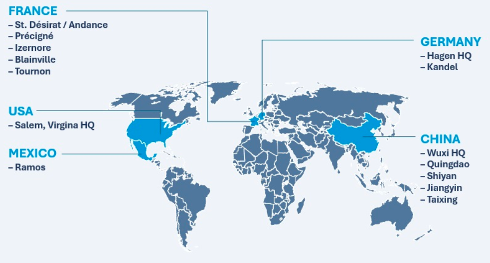

Mon Stage chez STS Composite
1. Présentation de l'entreprise
STS Composite fait partie du groupe STS AG, un fournisseur mondial de premier plan de composants et de systèmes innovants destinés aux industries des véhicules utilitaires et de l'automobile. L’entreprise accompagne les plus grands constructeurs en leur fournissant des solutions techniques avancées et adaptées aux exigences de performance, de durabilité et de design.
STS propose une large gamme de pièces pour :
- l’intérieur des véhicules (panneaux de portes, garnitures, etc.),
- les éléments extérieurs (pare-chocs, protections latérales...),
- et le compartiment moteur (encapsulations, protections thermiques...).
Les composants développés par STS visent à :
- améliorer l’esthétique et l’aérodynamisme des véhicules,
- réduire les nuisances sonores intérieures et extérieures,
- et surtout alléger le poids global des véhicules grâce à des matériaux composites techniques.
Le groupe se distingue par sa forte intégration verticale : il prend en charge l’ensemble du cycle de vie du produit, de la conception à la fabrication, en passant par la recherche & développement et les tests qualité. Parmi les technologies maîtrisées, on retrouve :
- l’injection plastique,
- la compression & hot molding,
- la production de SMC (Sheet Molding Compound),
- et les matériaux non-tissés.
Le siège social est basé à Hallbergmoos, en Allemagne. Le groupe emploie plus de 2500 personnes à travers le monde.
STS s’engage dans une démarche de gouvernance durable, responsable et transparente, en intégrant les critères ESG (Environnement, Social, Gouvernance) dans sa stratégie globale. Cet engagement vise à répondre aux attentes de ses clients, de ses partenaires industriels et de ses collaborateurs.

Le groupe dispose de près de 4 sites de production répartis dans 7 pays et sur 3 continents, avec une présence forte :
- en Europe (Allemagne, France, Espagne, Pologne...),
- en Chine,
- et dans les Amériques (notamment au Mexique).
En France, plusieurs sites industriels sont implantés :
- Saint‑Désirat,
- Tournon-sur-Rhône,
- Izernore,
- Blainville-sur-Orne,
- Kandell,
- et Précigné.
Cette organisation mondiale et multisite permet à STS de répondre aux demandes de ses clients internationaux avec flexibilité, réactivité et compétitivité.
2. Le groupe IT
Le centre du support informatique du groupe STS en France est situé sur le site de Saint-Désirat, en Ardèche. Ce site occupe une place stratégique au sein de l'organisation IT du groupe, en assurant la gestion et le support informatique de la quasi-totalité des sites européens du groupe.
Parmi les sites français gérés par l’équipe IT de Saint-Désirat, on retrouve notamment : Tournon, Izernore, Blainville-sur-Orne, Kandell et Précigné. Le support couvre à la fois les infrastructures réseaux, les serveurs, les systèmes d’information, la cybersécurité, la gestion des comptes utilisateurs, le déploiement de solutions logicielles, ainsi que la maintenance du parc informatique.
Cette centralisation permet une meilleure cohérence dans la gestion des systèmes d'information, une réactivité accrue en cas d'incident, et une mise en œuvre plus efficace des projets IT à l’échelle régionale. Le site de Saint-Désirat joue donc un rôle clé dans le bon fonctionnement et la continuité des opérations numériques du groupe en Europe.
De par son envergure, l’équipe IT de Saint-Désirat collabore également étroitement avec les autres entités du groupe à l’international (notamment en Allemagne et au Mexique), afin de garantir une homogénéité des standards techniques et de sécurité à l’échelle mondiale.
3. Mon intégration dans l’équipe IT
C’est au sein de l’équipe informatique basée à Saint-Désirat, plus précisément dans le service Back Office (BO), que j’ai intégré le service IT en tant que stagiaire pour une durée de six semaines, du 23 juin 2025 au 1er août 2025.
Dès mon arrivée, j’ai été accueilli chaleureusement par Stéphane CONTE et Pierre DESCORMES. Ils m’ont rapidement intégré dans leur dynamique de travail, en me présentant les locaux, les procédures internes et les outils informatiques spécifiques à l’entreprise.
L’équipe IT de Saint-Désirat gère une grande partie de l’infrastructure informatique pour plusieurs sites européens du groupe, ce qui m’a permis d’observer le fonctionnement d’un service informatique multi-sites à l’échelle internationale. Mon poste de travail a été rapidement configuré, avec accès aux différents outils nécessaires : Active Directory pour la gestion des utilisateurs et des machines, Centreon pour observer l’état des services, , PowerShell pour automatiser certaines tâches techniques et quelques autres.
Dès les premiers jours, j’ai pu prendre part à des missions concrètes et responsabilisantes.L'équipe m’a accompagné pour comprendre le fonctionnement des outils et les bonnes pratiques, tout en me laissant de plus en plus d’autonomie au fil des semaines. Cette immersion m’a permis de développer à la fois mes compétences techniques et ma capacité à travailler dans un environnement professionnel exigeant, mais aussi bienveillant et collaboratif.
L’ambiance au sein de l’équipe était très conviviale, ce qui a fortement contribué à mon intégration et à mon envie de m’impliquer pleinement. J’ai pu échanger régulièrement avec mes collègues sur les projets en cours, les enjeux techniques et les bonnes pratiques à adopter.
4. Missions réalisées
Au cours de mon stage, j’ai eu l’opportunité de participer à plusieurs missions techniques et transversales :
- Maintien en Conditions Opérationnelles (MCO) : j’ai assuré un suivi quotidien de l’état des services critiques, réalisé des tests ponctuels sur les postes utilisateurs, et participé à la gestion des tickets via l’outil de support. Ce travail m’a permis de mieux comprendre la logique de supervision et de continuité de service dans un environnement de production.
- Déploiement de Windows LAPS : j’ai contribué à la mise en place de la solution de gestion automatique des mots de passe administrateur locaux (LAPS) dans l’infrastructure Active Directory. Cela a impliqué la création de GPO spécifiques, la configuration des permissions de lecture, la liaison aux unités organisationnelles (OU), ainsi que la vérification du bon fonctionnement via des tests sur différents sites.
- Script PowerShell de suivi multi-sites : pour améliorer la visibilité sur l’état de déploiement de LAPS dans le groupe, j’ai développé un script PowerShell automatisé capable de collecter les informations clés (statut de LAPS, date de rotation du mot de passe, etc.) sur l’ensemble des sites de STS (France, Chine, Mexique). Les résultats sont exportés sous forme de fichier Excel facilitant l’analyse globale.
- Rédaction d’un runbook technique : afin de faciliter la maintenance et le futur déploiement de la solution, j’ai rédigé une documentation complète détaillant l’ensemble des étapes d’installation, de configuration et de dépannage de Windows LAPS. Ce document servira de référence aux équipes locales et distantes.
- Gestion des imprimantes réseau : j’ai été amené à suivre l’ajout et la configuration d’imprimantes partagées, leur intégration dans l’outil interne de suivi (état, consommables, maintenance), et à répondre à certaines demandes d’utilisateurs à ce sujet.
5. Bilan personnel
Ce stage m’a offert une immersion concrète dans le fonctionnement d’un service informatique au sein d’une entreprise industrielle internationale. J’ai pu consolider mes compétences en administration système, en gestion de parc informatique, et en cybersécurité grâce à des projets à forte valeur ajoutée.
Il m’a également permis de renforcer ma capacité à travailler en autonomie, tout en collaborant efficacement avec les membres de l’équipe. J’ai pris conscience de l’importance de la rigueur, de la documentation technique et des sauvegardes dans le maintien d’une infrastructure fiable et sécurisée.
6. Conclusion
Mon stage chez STS Composite a été une expérience extrêmement enrichissante sur les plans professionnel et personnel. Il m’a permis de m’investir dans des projets concrets, d’acquérir de nouvelles compétences techniques et de mieux comprendre les enjeux informatiques d’un grand groupe industriel.
Je remercie toute l’équipe IT de Saint-Désirat pour leur accueil, leur disponibilité et la confiance qu’ils m’ont accordée tout au long de cette période.